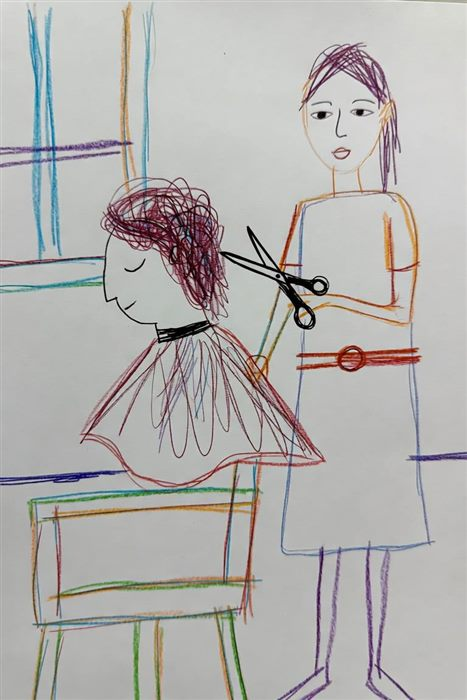
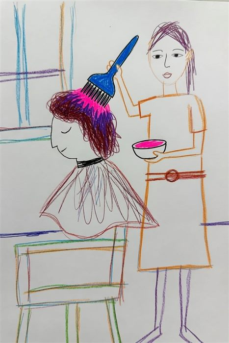
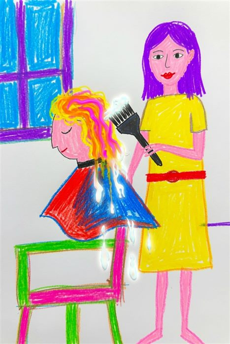
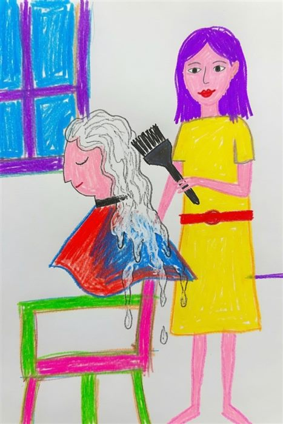
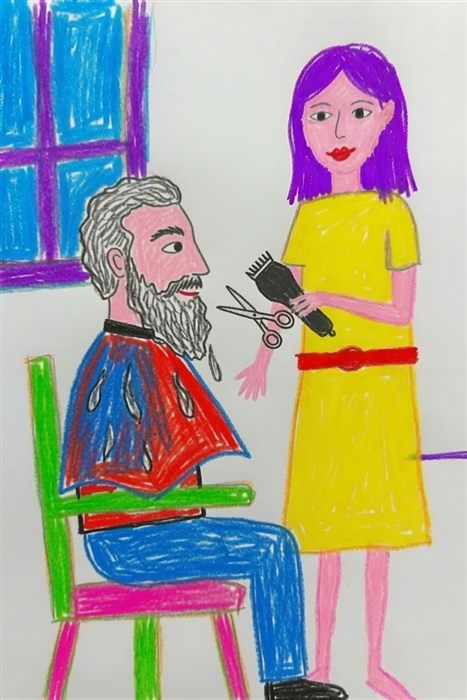
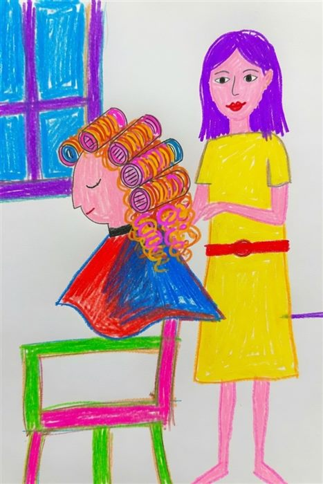
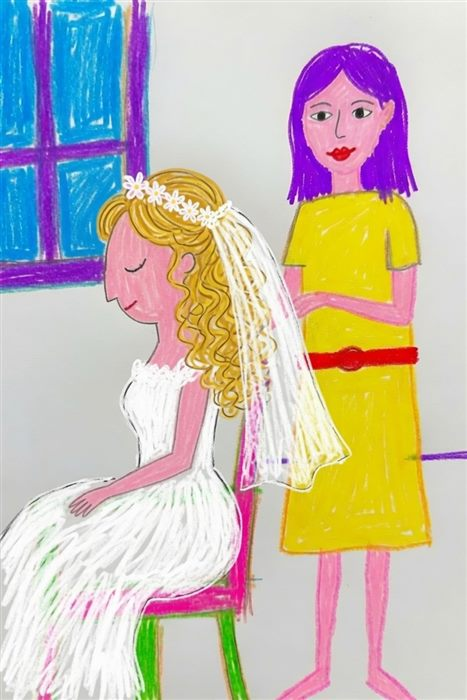

Hår, klipp og hårfjerning
Fra en rask trim til en helt ny farge, og skånsom voksing for kropp og ansikt. Alle priser er veiledende, så sjekk alltid oppdatert pris i bestillingssystemet.
Frisør
Hos KosmetiKos finner du dyktige frisører med godt øye for detaljer og en god porsjon kreativitet. Enten du ønsker en rask trim, en helt ny farge eller skal forberede deg til en stor dag, tilpasser vi behandlingen etter håret ditt, ansiktsformen din og stilen du ønsker deg.

Klipp
Et godt klipp er grunnmuren i all god hårpleie. Vi starter alltid med en samtale om hva du ønsker, før vi klipper og former håret ditt slik at det er enkelt å style i hverdagen. Passer for alt fra en liten trim til en helt ny fasong.

Farge
Vil du dekke grått hår, friske opp fargen din eller prøve noe helt nytt? Vi bruker kvalitetsprodukter og tilpasser fargen etter hudtonen og håret ditt, slik at resultatet blir naturlig og jevnt.

Striper og bleking
Striper og bleking gir håret dybde, lys og bevegelse. Vi jobber med alt fra diskré striper til full bleking, og tilpasser teknikken etter hvor lyst du ønsker resultatet og hvor mye håret tåler.

Hårkur
En god hårkur gjenoppbygger og styrker håret innenfra, og er perfekt etter farging, bleking eller om håret bare trenger litt ekstra kjærlighet.

Skjegg
Vi tilbyr også trim og forming av skjegg, slik at du går ut derfra med et ryddig og veltrimmet resultat.

Permanent
Ønsker du mer krøll og volum i håret? Med en permanent får du varig sving som holder seg over tid, tilpasset lengden og tykkelsen på håret ditt.

Brud
På bryllupsdagen skal alt sitte som det skal. Vi setter av god tid til brudefrisyren din, gjerne med en prøvetime i forkant, slik at du kan slappe helt av på selve dagen.
Hårfjerning med voks
Kroppshår har flere viktige funksjoner. Det bidrar til å regulere kroppstemperaturen, beskytter huden og reduserer friksjon mellom hudfolder. I dagens samfunn ønsker likevel mange å fjerne uønsket hårvekst, og hos KosmetiKos tilbyr vi skånsom hårfjerning med varm voks for både kropp og ansikt, blant annet overleppe, kinn, armhuler, armer og bein.
Hvorfor velge voksing?
Voksing gir et langvarig resultat siden håret fjernes fra roten, og du kan nyte glatt og hårfri hud i 4 til 6 uker etter behandlingen. Etter hvert som du vokser jevnlig, vil de nye hårene som vokser frem ofte bli tynnere og mykere.
Vi bruker varm voks, som er skånsom mot huden og bidrar til å minimere irritasjon, også for deg med sensitiv hud.
Slik forbereder du deg til timen
For best resultat bør hårene være rundt 5 millimeter lange før timen. Det kan også være lurt å skrubbe huden forsiktig dagen før behandlingen, slik at huden er klar for voksingen.
De første 24 timene etter behandling bør du unngå sol og beskytte det behandlede området mot UV-stråler. Unngå også parfymerte produkter og kremer, samt harde treningsøkter, slik at du slipper unødvendig svette og irritasjon på huden.
Ofte stilte spørsmål
Hvilke hårtyper har vi på kroppen?
Kroppen har to typer hår. Vellushår er de korte, lyse hårene som dekker nesten hele kroppen. Terminalhår er de lengre, mørkere og tykkere hårene du finner blant annet på hodet, i armhulene og i intimsonene.
Hva er forskjellen på voksing og andre metoder?
Barbering og kremer kutter eller løser opp håret på overflaten, slik at det raskt vokser ut igjen. Voksing fjerner derimot hele hårsekken, noe som gir et mer langvarig resultat. Laser og IPL er en lysbehandling som reduserer hårveksten permanent over tid.
Klar for en ny frisyre?
Bestill time online: velg behandling og tid, og få bekreftelse på e-post.
Bestill time nå